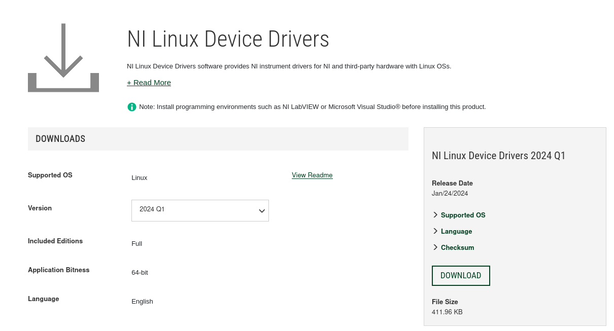

NI Software Setup
Note
Perform the following configuration steps without the PXI chassis connected
Software requirements
The installation and compilation of the software needs the installation of the following packages:
$ sudo dnf update
$ sudo dnf config-manager --set-enabled crb
$ sudo dnf install epel-release
$ sudo dnf group install "Development Tools"
$ sudo yum install rsync
$ sudo yum install pugixml-devel
$ sudo yum install doxygen graphviz
Download Software from NI
Use the following link to download the package to install the NI repository access in your computer. Select version 2024 Q1. Download the file and decompress it in a local folder.
{kind=link}
$ sudo dnf./ install ./ni-rhel9-drivers-2024Q1.rpm
Install additional dependencies
$ sudo dnf install chkconfig
Installation of NI Packages
$ sudo dnf install ni-pxiplatformservices
$ sudo dnf install ni-visa
$ sudo dnf install ni-sync
$ sudo dnf install ni-flexrio
$ sudo dnf install ni-rseries
$ sudo dnf install ni-syscfg-devel
$ sudo dnf install ni-hwcfg-utility
$ sudo yum install ni-flexrio-modulario-libs-devel
The kernel modules used by NI needs to compiled and installed, use this command to do it
$ sudo dnf dkms autoinstall
Verify that the NI HW Configuration utiliy run
$ ni-hwcfg-utility
{kind=link}
Reboot the system
Note
After reboot the configuration of the network can be altered by the installation of the ni-sync module. Verify that ethernet interfaces are not changed
Note
Connect the PXIe chassis with the PXIe 6683h and the R-Series device inserted in the corresponding slots.
Note
After booting the system verify the ethernet interfaces and configure the PXIe 6683h with an IPv4 adrres, netmask, gateway. The ethernet interface needs to be connected to a IEEE1588 netowrk with a master.
Verification of the hardware installed
- ..note::
This output will be different depending on the hardware available in your system
$ lsni -v
Scanning localhost for devices...
System Configuration API Experts found:
NI Device Interconnect Manager 24.0.0 (nidim)
NI-CONTROLLER 24.0 (ni-controller)
NI Network Browser 24.0 (network)
niflexrio2 24.0.0 (niflexrio2)
NIFLEXRIO 24.0.0 (niflexrio)
NI MX Routing Utility 24.0.0 (nimru)
NI-MXI 24.0 (ni-mxi)
NI PXI Platform Services 24.0 (ni-pxi)
NI-QPXI 24.0 (ni-qpxi)
NI-RIO 24.0.0 (ni-rio)
NI-Sync 23.8 (ni-sync)
NI System Configuration 24.0 (nisyscfg)
NI-VISA 24.0 (ni-visa)
System Configuration API resources found:
rocky93ipp
--Primary Expert: NI System Configuration 24.0
--Model Name: B85M-D3H
Ethernet Adapter enp6s0
--Primary Expert: NI System Configuration 24.0
ASRL1::INSTR
--Primary Expert: NI-VISA 24.0
ASRL2::INSTR
--Primary Expert: NI-VISA 24.0
ASRL4::INSTR
--Primary Expert: NI-VISA 24.0
ASRL5::INSTR
--Primary Expert: NI-VISA 24.0